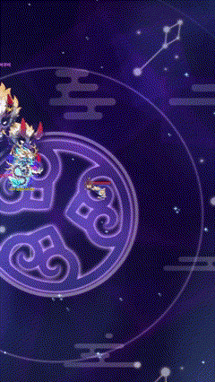
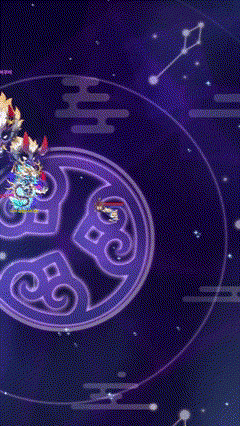

Idle Ninja Online
'Idle Ninja Online' is an idle RPG mobile game released in 2021, loved by many players for its fast paced growth and unique system composed of five shurikens. The game was able to reach further audience through the integration of blockchain for P2E features and the release of NFT pets.
With over three years of global service and steady performance, 'Idle Ninja Online' has established a significant presence in both the idle RPG and P2E game genres.
Role Description
Content Design
Event Design
Boss Dungeon
"Enraged Shuten Doji"

Background
Results
Dungeon Progress
Shuten Doji
Ibaraki Doji
Monster Tent
Looking Back
Keep
Problem
Try
2024 Lunar New Year Event
"Rise, Blue Dragon"
Event Theme
Goals


*Blue Dragon Summon Tiers: [Rare] >> [Hero] >> [Legendary] >> [Divine] >> [Ultimate]
Blue Dragon
Event Progression

Enhanced Skills
 


UI / UX


Results
Dragon Pearl Distribution
Event Period Sales Products